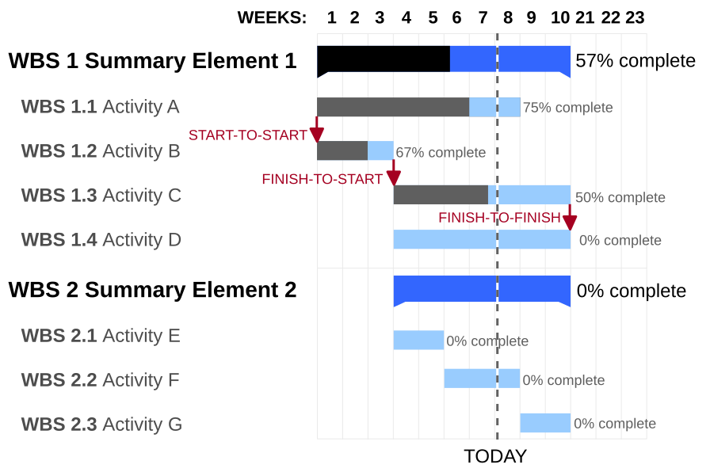

<!-- .slide: data-auto-animate-restart id="MEDI2101Wk12" --> #### MHHS8007 Advanced Research Practice. ### # Week 12<br>Preparing a research proposal ##### Assoc. Prof. Mark Butlin (PhD, BE, SFHEA) (he/him) <p>Macquarie Medical School, Faculty of Medicine, Health and Human Sciences<br>Macquarie University. On the land of the Wallumattagal clan of the Dharug Nation.</p> <a href="https://students.mq.edu.au/support"><img src="images/mq_support.png" alt="Student wellbeing logo. Wallumattagal peoples at Macquarie. LGBTQI+ Safe Space for Everyone" align="right" width=33%></a> <p class="citation" style="margin-top: 20px; clear: both;">This material is provided to you as a Macquarie University student for your individual research and study purposes only. You cannot share this material without permission. Macquarie University is the copyright owner of (or has licence to use) the intellectual property in this material. Legal and/or disciplinary actions may be taken if this material is shared without the University’s written permission.</p> --- <!-- .slide: data-auto-animate-restart --> #### ## Overview of assessment ### -- ### The assessment #### <a href="https://ilearn.mq.edu.au/mod/assign/view.php?id=8715318">https://ilearn.mq.edu.au/mod/assign/view.php?id=8715318</a> -- ### Relevance #### - Research proposal forms an early part of the second year of the masters of research. - Research proposals are the crux of fellowship and grant applications. - Research proposals are the basis of ethics applications. - Proposals more generally are the starting point for any new health initiative, surgical change, business development... The viability of a project, whether it goes forward or is dropped, is decided from the proposal. --- <!-- .slide: data-auto-animate-restart --> #### ## Components of a research proposal ### -- ### Components of a research proposal #### - Title and team - Background - Methods - Expected outcomes - Ethical requirements - Timeline - References -- ### Components of a research proposal #### Title and team - **Title**<br>Take your time (lots of time) to come up with a clear, informative title. The title is the first and last thing the person reading the proposal sees. It should be concise but informative. Avoid jargon and abbreviations. - **Team**<br>List the investigators, their roles and their relevant experience. What are they bringing to the project? How do their skills strengthen the project? This is not just a list of names. The team is a critical part of the proposal to demonstrate its viability, and more so, its propensity for success based on the experience of the team. -- ### Components of a research proposal #### Background This should be compelling! - Why is this research important? - What is the problem you are addressing? - Why does it need to be addressed? - What is already known about this problem? - What gaps in knowledge exist that your research will address? - How will your research advance knowledge in this area? -- ### Components of a research proposal #### Methods Part of the methods will be a straightforward plan: - Describe the research design and methodology. - Explain how you will collect **and** analyze data. Statistical approaches should be provided, but in brief. - Explain it in a way that someone unfamiliar with the methods and the specific field can understand it. The methods should also reflect upon, critique, and sell the approach: - Explain why you have chosen these methods. - Discuss any potential challenges and how they will be addressed. - Justify your chosen methods and their appropriateness for your research question. -- ### Components of a research proposal #### Expected outcomes This section should close the loop from your methods back to the background section. - What do you hope to achieve with this research? - What are the potential benefits of your research? - How will you measure the success of your research? - What impact do you expect your research to have on the field? - How will your research contribute to the existing body of knowledge? -- ### Components of a research proposal #### Ethical requirements This section can be brief (unless there are ethical complexities), addressing any ethical considerations related to your research. - What ethical approvals will be required from which ethical bodies? - Have you obtained the necessary approvals from relevant ethics committees? If not, by which deadline would a submission be made? - How will you ensure the ethical use of data and resources? - Human research: - How will you ensure informed consent from participants? - What measures will you take to protect participant confidentiality? - Are there any potential risks to participants, and how will you mitigate them? <p class="citation"><a href="https://www.mq.edu.au/research/our-research/research-ethics-and-integrity/animal-ethics">Macquarie University Animal Ethics Committee.</a><br><a href="https://www.mq.edu.au/research/our-research/research-ethics-and-integrity/human-ethics">Macquarie University Human Ethics Committees.</a></p> -- ### Components of a research proposal #### Timeline <div style="display: flex; width: 100%"> <div style="flex: 0 0 50%; padding: 0px;"> <ul> <li>Provide a detailed timeline for your research project.</li> <li>Break down the project into phases or milestones.</li> <li>Include key deliverables and deadlines for each phase of the project.</li> <li>The timeline should be realistic and achievable within the proposed timeframe (10 months).</li> </ul> <p>Gantt charts lend themselves well to this section.</p> </div> <div style="flex: 0 0 50%; padding: 0px;"> <p></p> </div> </div> <p class="citation">There are many ways to create a Gantt chart. <a href="https://spreadsheeto.com/gantt-chart/">Here is one set of instructions to use Microsoft Excel to create a simple Gantt chart.</a><br>Image source: <a href="https://en.wikipedia.org/wiki/Gantt_chart#/media/File:GanttChartAnatomy.svg">Garry L. Booker, Wikipedia.</a></p> -- ### Components of a research proposal #### References - Using Vancouver style. - Use a reference manager. I suggest <a href="https://www.zotero.org">Zotero</a> (free, open source). Other options are <a href="https://www.mendeley.com">Mendeley</a> (free, Elsevier owned), <a href="https://libguides.mq.edu.au/referencing-software">EndNote</a> (not free, but Macquarie University student license provided), and <a href="https://refworks.proquest.com">RefWorks</a> (not free, Clarivate owned). - Ensuring citations support rationale and methods. - Using citations should be constructive, not just to show you have read widely. --- <!-- .slide: data-auto-animate-restart --> #### ## Writing ### -- ### Target audience #### Audience: "Biomedical scientist, not necessarily specific to your research area." This does not mean that you should shy away from the more complex aspects of your study, but it does mean that you will have to communicate it well, considering that audience. -- ### Word limit #### No more than 2000 words including references. The word count for the entire Microsoft Word document will be taken as the word count. i.e., includes everything in the document, including references, figure legends, tables, etc. It is usual for research proposals to have a strict limit on word count, number of characters, or number of pages (where font, font size and page margins are specified). This assessment has a simple word limit. Font and font size is up to you. But I would recommend a highly <a href="https://gatekeeperpress.com/most-readable-font-for-print/">legible serif font</a> for paragraph text. <p class="citation">Much of A/Prof. Butlin's work, where he has the option, uses <a href="https://www.brailleinstitute.org/freefont/">Atkinson Hyperlegible Next</a>, even though it is a sans serif font.</p> -- ### Pilot data #### You can include communication of pilot data for the research project. You can also include figures from relevant papers that help build the background.<br>(Make sure to cite them properly.) Usually, there are limits on the space so figure choice is quite strategic. Or often proposals are text only. There are no such limits in this research proposal. Figure choice should still be constrained to be highly constructive for the proposal. -- ### "Selling" your proposal #### - Clearly articulate the significance of your research. - Highlight the innovative aspects of your approach. - Emphasize the expertise of your team. - Address potential concerns or objections. - Provide a compelling narrative that connects all elements of the proposal. The "selling" should be grounded in the scientific rationale and methods, not enthusiastic language or hyperbole. Remember the audience you are communicating to. -- ### Writing #### <div style="display: flex; width: 100%"> <div style="flex: 0 0 50%; padding: 0px;"> <ul> <li>The hourglass model of scientific writing.</li> <ul> <li><b>Top of hourglass:</b> Start with the big picture, with what is known.</li> <li><b>Neck of hourglass:</b> Narrow down to the specific research question (what is not known) and methods.</li> <li><b>Bottom of hourglass:</b> Broaden out again to the expected outcomes and significance, mirroring aspects of the big picture where you started.</li> </ul> <li>Logical flow between sections.</li> <li>Logical flow between paragraphs.</li> <li>Clear, concise, and coherent writing.</li> </ul> </div> <div style="flex: 0 0 50%; padding: 0px;"> <p class="citation">Image source: <a href="https://garder.vercel.app/posts/weathering-with-you-gif-loop/">garder. Weathering with you gif.</a></p> </div> </div> -- ### Storytelling #### Review week 4 and week 11 online modules (Communicating to the public / Communicating to a scientific audience). Good storytelling is critical to a successful research proposal. The reader should be convinced of the importance of the research question, the appropriateness of the methods, and the likelihood of success. The title, team, background, methods, and expected outcomes, ethical requirements should all come together to tell a compelling story about your research project. The timeline should provide the roadmap for that story. -- ### Other online modules of relevance #### Week 2: The scientific method. Week 3: Critical thinking. Week 8/9: Statistics. Week 10: Data presentation (for choosing what figures to include, or if generating your own figures). --- ### Common mistakes #### - Not discussing it with your research supervisor **before** you start. - Misalignment between sections. - Lack of justification for methods. - Overly technical or vague language. - Lack of clarity and focus. - Inadequate background research. - Ignoring feasibility (able to be completed in timeframe) or ethical considerations. - Poor formatting or referencing (care in presentation indicates probability of care in research). - Insufficient attention to the target audience. - Not drafting early to allow time for meaningful supervisor feedback and to revise significantly using that feedback. -- ### Q&A ####